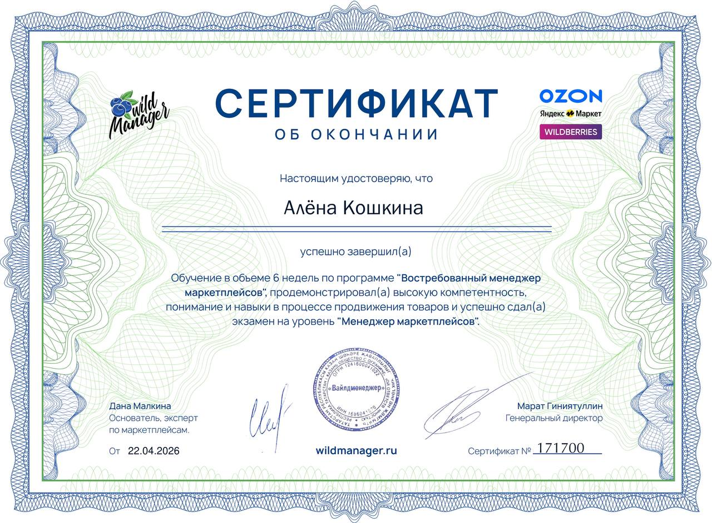
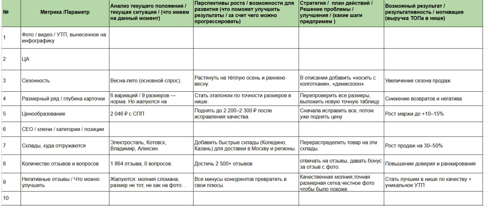
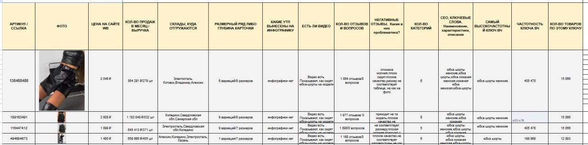
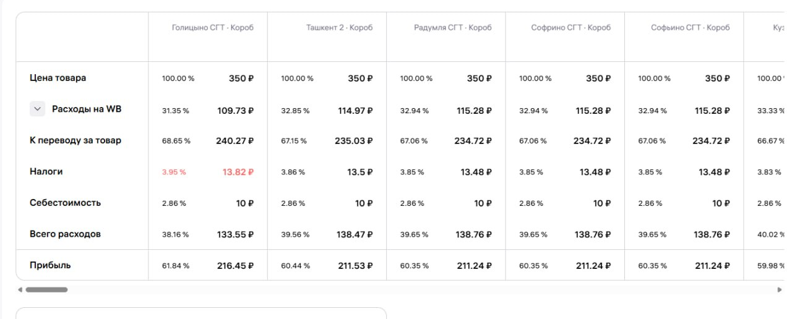
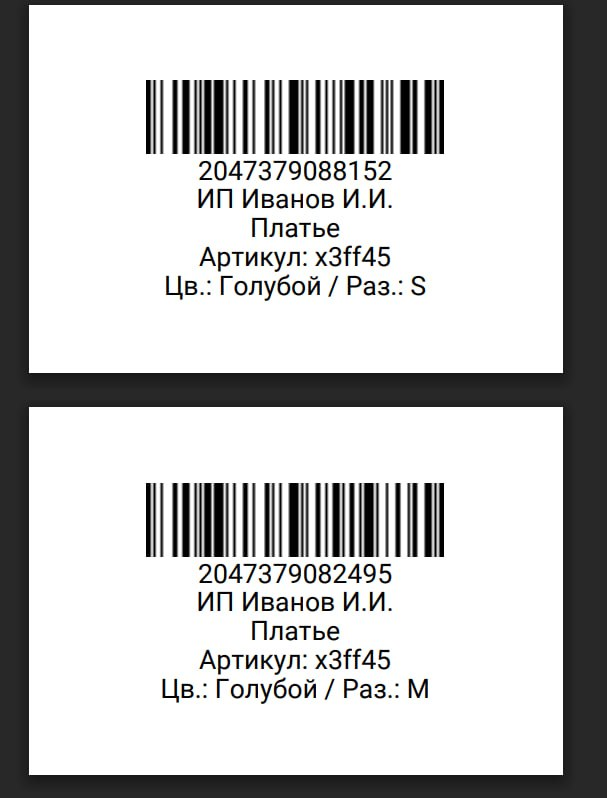
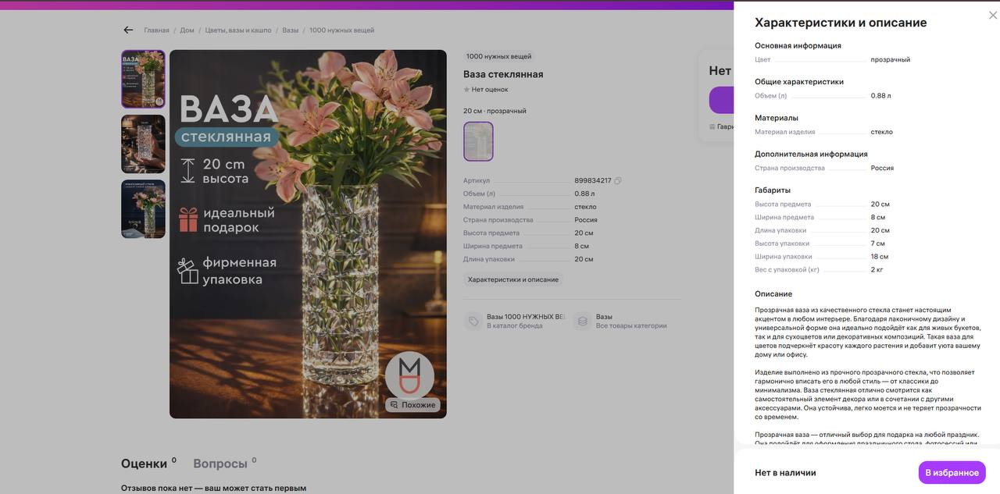
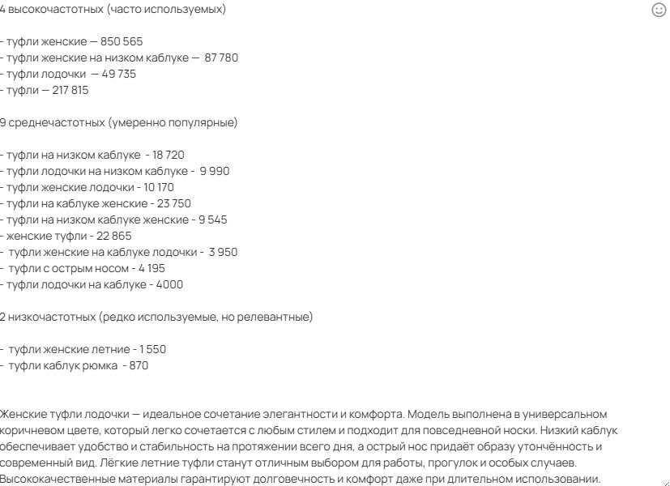
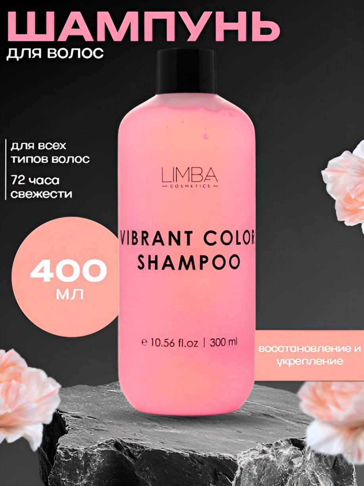
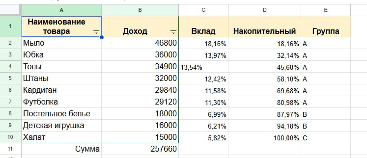
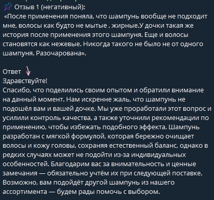

Ваш персональный менеджер маркетплейсов
Помогу вашим товарам стать прибыльными, стабильными и заметными
Привет! Я Алёна, и я с головой в маркетплейсах. Изучаю Wildberries на профессиональном уровне: от SEO и инфографики до расчёта юнит-экономики и управления рекламой. Люблю цифры, порядок и видеть, как моя работа превращается в рост продаж. Моя цель — дать вам опору, чтобы каждый товар приносил прибыль, а не держался на догадках. Не боюсь сложных задач, быстро учусь и отвечаю за результат.

Подтверждение моей квалификации

Провела аудит карточки по 5 параметрам. Нашла точки роста: устранение брака, точная размерная сетка, честное фото. После доработок — цена +10–15%, продажи +30–50% за счёт быстрых складов. Спрос растянут на осень и весну

Сравнила нашу карточку с 3 конкурентами. Обнаружила: цена и качество не главное. Лидеры выигрывают за счёт быстрой доставки и складов (Коледино, Казань). Точка роста — логистика, а не контент.

Рассчитала выгодный склад для «Игл для рукоделия» по FBW. Сравнила тарифы через калькулятор прибыли. Лидер — Голицыно СГТ: лучшие условия хранения и логистики, максимальная чистая прибыль.

Подготовила детские платья S и M к первой поставке: сделаны этикетки, упаковка по правилам WB. Товар пройдёт приёмку без замечаний и штрафов.

Рассчитала юнит-экономику под маржу 200 ₽. Установила скидку без убытка. Создала SEO-карточку: описание, характеристики. Товар виден, маржа соблюдена, продажи пошли.

Собрала ключи для «Туфли женские на каблуке»: 4 ВЧ, 9 СЧ, 2 НЧ. Проанализировала выдачу и конкурентов. Карточка готова к точечной SEO-оптимизации для роста видимости и продаж.

Сделала цепляющую инфографику

Провела ABC-анализ. ABC-анализ 9 товаров: 80,98% дохода дают 6 позиций (группа A) — это ядро. Халат (группа C, 5,82%) не окупается — рекомендую выводить или перезапускать. Фокус — на лидерах.

Почему ответ выстроен так: — Сначала выражена эмпатия и благодарность за обратную связь — Обозначено, что проблема уже проработана (важно для доверия) — Нет обвинений, акцент на индивидуальных особенностях — Подсвечены преимущества продукта (мягкая формула) — Предложена альтернатива → попытка сохранить клиента